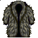
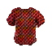

| Picture | Name | Description | What it does | Where it's from |
 |
Bear Fur | The crystal fibered fur of a large grizzly bear (Level 40 req) |
Base AC of X | Tan a bear in the first area of Sullen keep |
 |
Basilisk Scales | The deep red and brown scales of a timeless basilisk (No level requirement) (Can be used by psi users) |
Base AC of 1000 | Kill and tan the Basilisk in the sullen caves |
 |
Silver Boneplate | An intricate set of bone plate armor forged from a unique form of silver infused dragon bone | 20/20 +10 str +10 agil +10 wis +10 int 1000 damage absorption |
Quest in Sullen Keep |
 |
Silver Fieldplate | An intricate set of field plate armor forged from a unique form of silver (Level 87 req) (Barb or Ma only) |
15/15 +10 str +10 agil +10 wis +10 int 500 damage absorption |
Quest in Sullen Keep |
 |
Gold Boneplate | An intricate set of bone plate armor forged from a unique form of gold infused dragon bone (Level 89 req) |
25/25 +12 str +12 agil +12 wis +12 int 1200 damage absorption |
Quest in Sullen Keep |
 |
Gold Fieldplate | An intricate set of field plate armor forged from a unique form of gold (Level 89 req) (Barb or Ma only) |
20/20 +12 str +12 agil +12 wis +12 int 700 damage absorption Base AC value of 1000 |
Quest in Sullen Keep |
 |
Black Boneplate | An intricate set of bone plate armor forged from a unique form of blackstone infused dragon bone (Level 92 req) |
30/30 +14 str +14 agil +14 wis +14 int 1400 damage absorption |
Quest in Sullen Keep |
 |
Black Fieldplate | An intricate set of field plate armor forged from a unique form of black stone (Level 92 req) (Barb or Ma only) |
25/25 +14 str +14 agil +14 wis +14 int 900 damage absorption |
Quest in Sullen Keep |
 |
Green Boneplate | An intricate set of bone plate armor, forged from greenstone infused dragon bone (Level 95 req) |
35/35 +16 str +16 agil +16 wis +16 int 1600 damage absorption Base AC value of 1900 |
Quest in Sullen Keep |
 |
Green Fieldplate | An intricate set of field plate armor, forged from a unique form of green stone (Level 95 req) (Barb or Ma only) |
30/30 +16 str +16 agil +16 wis +16 int 1100 damage absorption Base AC value of 1500 |
Quest in Sullen Keep |